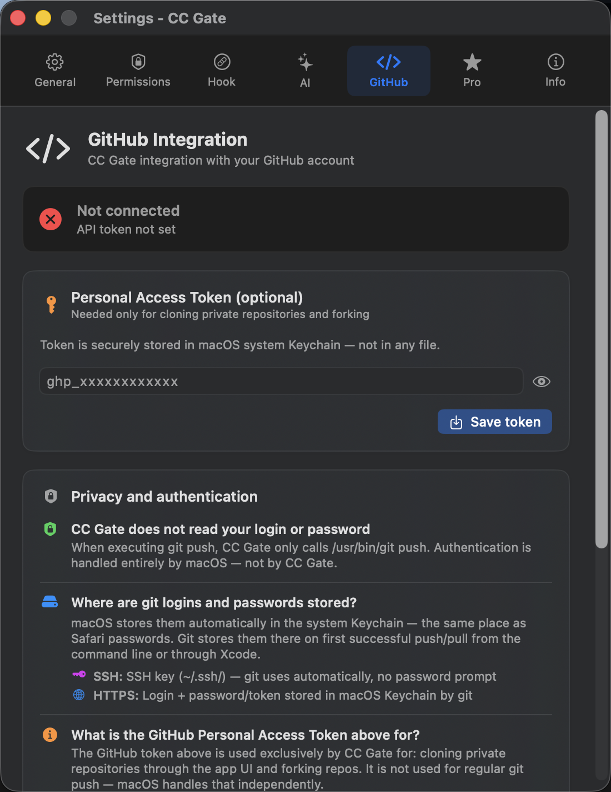

GitHub Integration
Connect CC Gate to your GitHub account and push code, fork repositories, and clone projects directly from the app.
Connecting your account
CC Gate uses a GitHub Personal Access Token to talk to GitHub on your behalf. Think of it as a password specifically for apps — you generate it on GitHub and paste it into CC Gate. It stays on your Mac and is never shared anywhere else.

Here's how to get a token and connect it:
-
Go to GitHub
Sign in to github.com, click your profile picture in the top right, then click Settings.
-
Open Developer settings
Scroll all the way down the left sidebar and click Developer settings. Then choose Personal access tokens → Tokens (classic).
-
Generate a new token
Click Generate new token (classic). Give it a name like "CC Gate" so you remember what it's for.
-
Choose permissions
Tick the repo checkbox. That's the only permission CC Gate needs.
-
Copy the token
Click Generate token and copy the result immediately — it starts with
ghp_. GitHub only shows it once. -
Paste it into CC Gate
Open CC Gate → Settings → GitHub → paste your token → click Save token. The status badge will turn green when it's connected.
Pushing changes
After you commit in CC Gate, a Push button appears showing how many commits haven't been pushed yet. Click it to send your changes to GitHub.
If the push is rejected — usually because someone else pushed something first — you'll need to pull the latest changes, sort out any conflicts, and then push again.
Forking a repo
Right-click a project in CC Gate and choose Fork. CC Gate creates a copy of that repository under your GitHub account. This is the standard way to contribute to open-source projects — you fork the repo, make your changes, then open a pull request.
Cloning a project
Click + in CC Gate, then choose Clone from GitHub. Enter the repository URL or the owner/repo name. CC Gate downloads it and adds it to your project list automatically.
Viewing your commit on GitHub
After pushing, a View on GitHub button appears. Click it to open that specific commit in your browser — useful for sharing with teammates or reviewing the diff.
Push
Send committed changes to GitHub in one click.
Fork
Copy any project to your GitHub account.
Clone
Download a repo and add it to your project list.
View on GitHub
Open any pushed commit in your browser.
Troubleshooting
Push rejected
Someone pushed to the branch before you did. Pull their changes first — your terminal can do this with git pull — resolve any conflicts, then push again from CC Gate.
Fork already exists
You already have a fork of this repo on GitHub. Go directly to github.com/your-username/repo-name to find it.
Token expired or not working
Go to GitHub and generate a new token the same way as above, then update it in Settings → GitHub → paste the new token → Save token.